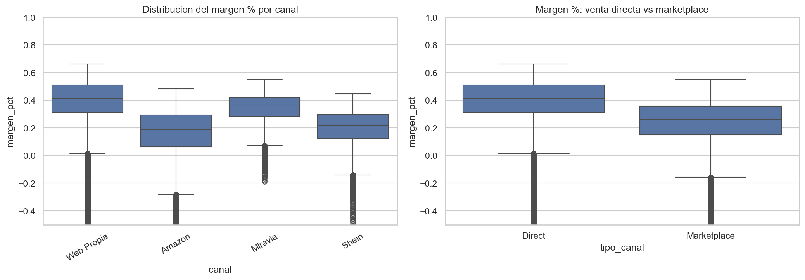
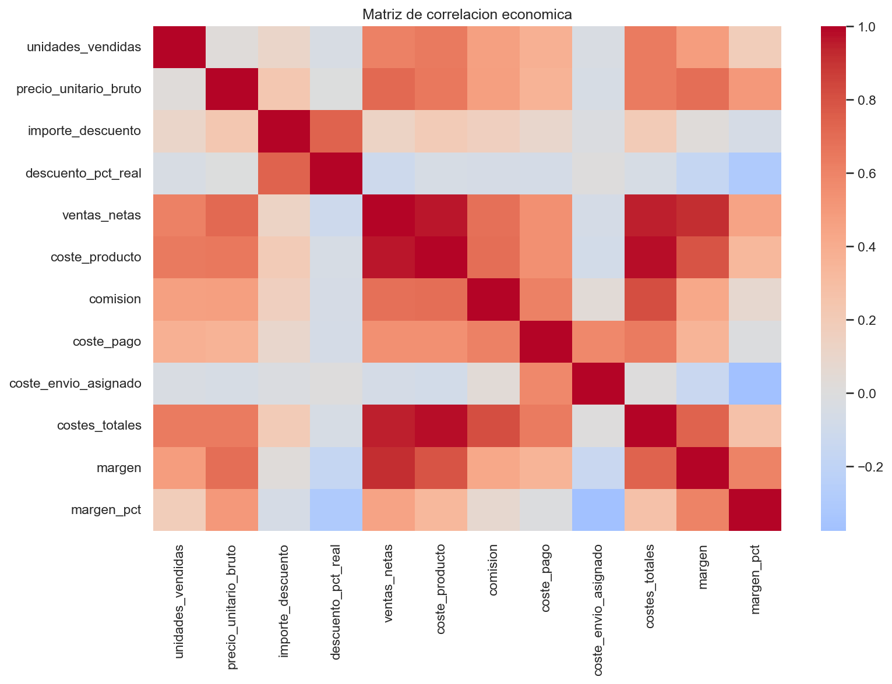
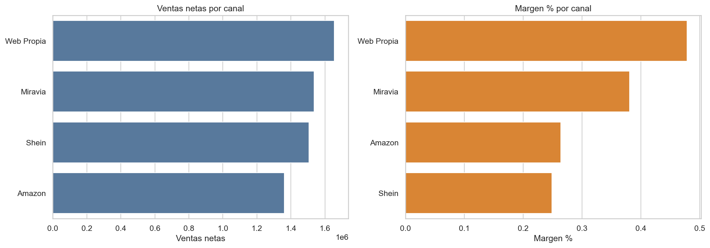
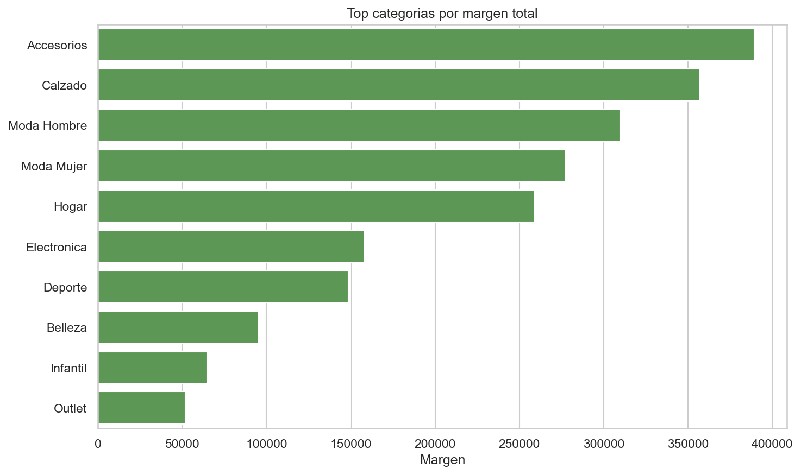
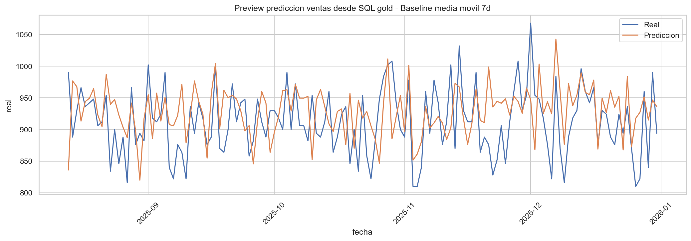
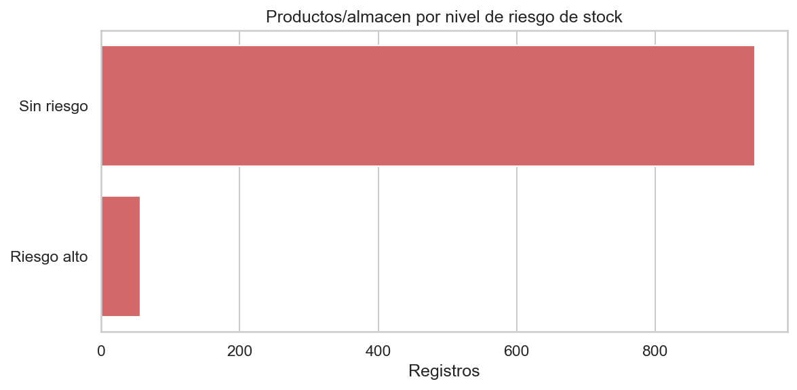

Mediana Direct39,7%
Mediana Marketplace27,5%
ResultadoDiferencia estadisticamente significativa


Informe ejecutivo construido con las capas gold/silver del modelo local TFM_MarginAnalytics. El objetivo de negocio es medir rentabilidad real por canal, categoria y producto, detectar riesgos de margen/stock y justificar una capa basica de data science para anticipar ventas.
Lectura general del negocio: la web propia tiene menor volumen que los marketplaces, pero genera una rentabilidad porcentual claramente superior.
| Canal | Tipo | Ventas | Margen % |
|---|---|---|---|
| Web Propia | Direct | 1.793.537 € | 44,2% |
| Amazon | Marketplace | 2.251.522 € | 30,9% |
| Miravia | Marketplace | 1.059.533 € | 33,8% |
| Shein | Marketplace | 838.288 € | 27,8% |

Permite localizar donde se concentra el margen y que familias necesitan revision comercial o de costes.

| Categoria | Subcategoria | Ventas | Margen % |
|---|---|---|---|
| Electronica | Accesorios movil | 684.008 € | 37,8% |
| Moda Mujer | Tops | 500.381 € | 35,7% |
| Moda Mujer | Vestidos | 506.184 € | 33,0% |
| Moda Hombre | Pantalones | 478.594 € | 33,7% |
| Moda Hombre | Camisetas | 440.755 € | 35,5% |
| Calzado | Zapatillas | 476.985 € | 32,1% |
| Hogar | Decoracion | 422.852 € | 34,9% |
| Calzado | Sandalias | 398.237 € | 36,6% |
| Deporte | Fitness | 338.391 € | 36,6% |
| Accesorios | Bolsos | 285.957 € | 38,9% |
La comparacion Direct vs Marketplace no se deja solo como intuicion visual: se valida con contraste estadistico no parametrico.


Modelo supervisado para anticipar unidades vendidas por producto, canal y fecha. La version actual es una base explicable, no una promesa perfecta de forecasting.
| Modelo | MAE | RMSE | R2 |
|---|---|---|---|
| Ridge | 2,05 | 2,67 | 0,313 |
| Linear Regression | 2,05 | 2,67 | 0,313 |
| MLP Neural Network | 2,09 | 2,68 | 0,307 |
| Gradient Boosting | 2,06 | 2,69 | 0,302 |
| Random Forest | 2,18 | 2,76 | 0,263 |
| Baseline media movil 7d | 2,16 | 2,81 | 0,236 |

Control operativo para revisar riesgo de stock y coherencia de datos antes de alimentar el dashboard final.

| Control | Resultado |
|---|---|
| ventas_netas_negativas | 0 |
| costes_totales_negativos | 0 |
| unidades_no_positivas | 0 |
| margen_pct_menor_que_menos_100 | 13 |
| descuento_negativo | 0 |
| descuento_superior_a_bruto | 0 |
| lineas_margen_negativo | 2999 |
Este preview usa los mismos nombres de paginas, KPIs y visuales definidos en la carpeta powerbi. En Power BI Desktop se conectaria a SQL Server LocalDB y se replicarian estas paginas con las medidas DAX ya preparadas.
| Elemento | Preparado | Ubicacion |
|---|---|---|
| Medidas DAX | Si | powerbi/MEDIDAS_DAX.md |
| Power Query M | Si | powerbi/POWERQUERY_M.md |
| Guia de paginas | Si | powerbi/PAGINAS_INFORME.md |
| Tema visual | Si | powerbi/TEMA_TFM_MARGIN_ANALYTICS.json |